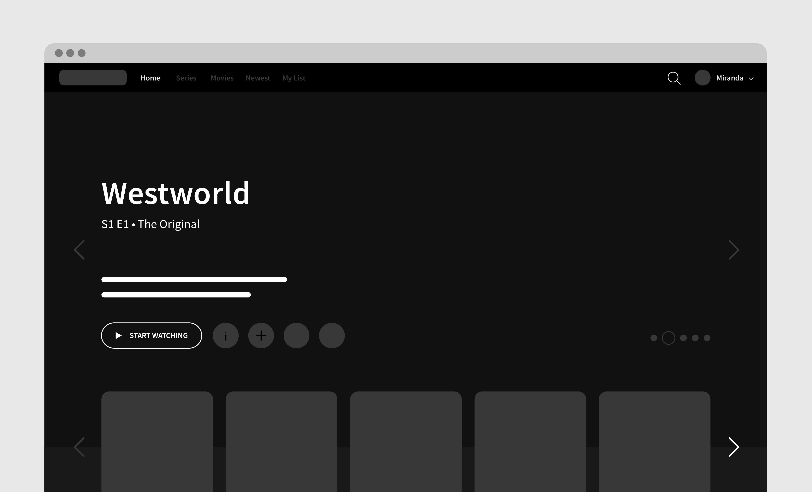

Project Elements
Duration üïê
February – March 2020 (2 weeks)
Tools ✒️
Figma, Adobe Illustrator
Team üë´‚Äç
Individual (Personal Case Study)
Role üôã‚Äç
UX/UI Designer
01. Project Overview
Background
The American premium television network, HBO offers a variety
of television series, documentaries, sports, movies, and more. HBO Go is an extension of their network,
allowing customers with a paid subscription to stream HBO content on demand from anywhere.
Current Web Design


Objective
The current web design feels impersonal and overly simple, creating a
mediocre and uninspiring experience for customers. It is also lacking in essential features,
such as content description or a play next episode button, thus making it frustrating for customers
to indulge in any content on the platform with ease. The purpose of this project
is to redesign the web interface and add and move features to make it easier and more engaging to watch content on HBO Go.
02. User Research
User Interviews
Because HBO has a diverse audience, I decided to conduct interviews with people in and out of my immediate network,
but also use the HBO Go reviews customers have left to guide my redesign.
To gain meaningful insight on the needs and priorities of my audience, I asked a series of questions while users interacted with the current website.
To gain meaningful insight on the needs and priorities of my audience, I asked a series of questions while users interacted with the current website.
How do you decide what to watch when you’re browsing?
What, if anything, caused you frustration using this platform?
Is HBO your first choice to consume media content? If not, what makes you gravitate
toward your preferred platform?
How might you improve its design and usability?
Competitive Analysis
Because all those I interviewed referenced HBO competitors, I decided to analyze what they were doing to engage users that HBO Go might lack.
I focused on two leading competitors, Hulu and Netflix. These series of comparisons will guide me in determining where HBO Go falls short, how they
can rise up to market standards, and what they can do to differentiate itself from its competitors.
Navigation


Previews & trailers


Content layout
Video Playback


Individual Preferences


Primary Concerns
After collecting these interview responses and examining competing platforms, I was able to reduce these insights down into three primary concerns that my redesign
of HBO Go will tackle.
Lack of individualized content
There is an absence of personalized content curation (i.e. recommendations), thus creating a sense of distance
Feels like a one-time use platform
The interface is uninviting and unmemorable
The layout of content is exactly the same throughout the entire page, which feels unexciting
and causes viewers to quickly scroll through without wanting to explore
Little to no assistance in guiding and informing users
Users are forced to hunt for their desired content because of the lack of content descriptions,
play next buttons, and other essential features that make for an easy watching experience
There's a lack of previews/trailers that would interest the users
03. Ideation
Sketches


04. Prototyping
Wireframes
I took the initial sketches and translated them into simple wireframes. I was able to
explore different layouts that best displayed the information to the user and ease their
watching experience. I added many features that I deemed suitable in aiding the viewer and minimizing
the frustration that many users expressed in their interviews and reviews.




High-Fidelty Prototype
For the final prototype design, I wanted to ensure that I continued the night time/dark theme that HBO Go applies across all platforms
to maintain their brand identity despite updating the overall interface. Like mentioned throughout my process, I hoped to build this redesign
around the users and integrate systems and features that would ease their watching experience. Ultimately, I wanted the user
to feel like a more valued customer and excited to explore all the content that HBO Go has to offer.


The design I decided on for the video playback screen incorporated features that users expressed would make the viewing experience much easier. Similar to
Netflix's "skip intro" button that pops up before every media content, I wanted users to have that option. The break in the playback bar indicates where
the actual episode begins and users can jump straight to that point if they choose. I hoped that this would eliminate the frustration of fast-forwarding
and guessing where the intro ends the episode starts. In addition, I made sure to add a "play next episode" feature that pops up when the viewer is nearing
an appropriate time at the end of an episode to ensure that the viewing experience is not disrupted by excessive clicking around to search for the desired content.
05. Reflection
Lessons & Takeaways
What was most significant about this project was that I was able to analyze existing systems and explore ways of improving them. Especially conducting
the competitive analysis study, I was able to really understand why HBO Go's competitors' were so successful and users were engaged with their products.
A lot of excitement I experience with being a designer comes from designing for others in mind and this project has fueled that interest, while also
teaching me about how to design for understanding as the end goal.
In the future, if I were to have time to come back to this project, I would like to produce a few more iterations and test the level of usability across a more broad audience. I would also like to redesign the mobile app as well to create a stronger connection between HBO Go's web and mobile platforms. I would Like to be able to think more deeply about their on-demand access to content and how to best implement that for different mediums, whether that be mobile, web, television, etc.
In the future, if I were to have time to come back to this project, I would like to produce a few more iterations and test the level of usability across a more broad audience. I would also like to redesign the mobile app as well to create a stronger connection between HBO Go's web and mobile platforms. I would Like to be able to think more deeply about their on-demand access to content and how to best implement that for different mediums, whether that be mobile, web, television, etc.